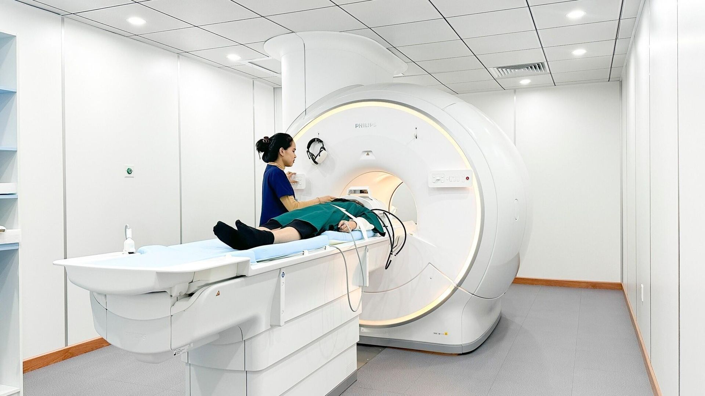
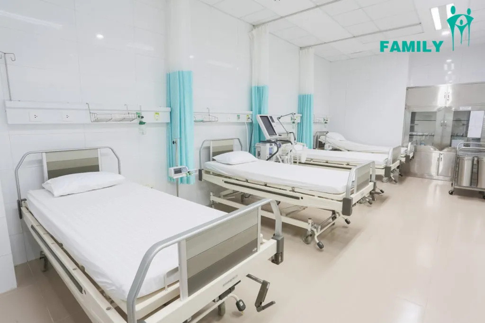

Khoa Nội tổng quát
Khám và điều trị các bệnh nội khoa thông thường.
Xem bác sĩ →Vì sức khoẻ nhân dân
Trang chủ / Chuyên khoa
HỆ THỐNG CHUYÊN KHOA
Tìm hiểu chuyên khoa và lựa chọn bác sĩ phù hợp với nhu cầu khám bệnh của bạn.
Lựa chọn khoa để xem danh sách bác sĩ.
Khám và điều trị các bệnh nội khoa thông thường.
Xem bác sĩ →Khám các bệnh lý tim và mạch máu.
Xem bác sĩ →Khám các bệnh về da, tóc và móng.
Xem bác sĩ →Khám cho trẻ em và thanh thiếu niên.
Xem bác sĩ →Chăm sóc sức khỏe sản phụ khoa.
Xem bác sĩ →Khám tai, mũi, họng và các bệnh liên quan.
Xem bác sĩ →Khám các bệnh lý về mắt.
Xem bác sĩ →Khám và điều trị răng, hàm, mặt.
Xem bác sĩ →Khám cơ, xương, khớp và vận động.
Xem bác sĩ →Khám các bệnh lý hệ thần kinh.
Xem bác sĩ →Chưa có chuyên khoa phù hợp trong dữ liệu mẫu. Hãy chọn bộ lọc khác hoặc đổi từ khóa.
Hình ảnh minh họa không gian và thiết bị hiện có trong bộ tài nguyên dự án.

Thông tin thiết bị thực tế sẽ được bổ sung sau.
Ảnh minh họa
Thông tin thiết bị thực tế sẽ được bổ sung sau.
Ảnh minh họa
Thông tin thiết bị thực tế sẽ được bổ sung sau.
Ảnh minh họaMang theo giấy tờ cá nhân và kết quả khám trước đây. Với lịch online, đến check-in ít nhất 30 phút trước giờ hẹn.
Dữ liệu minh họa · Chưa kết nối API.